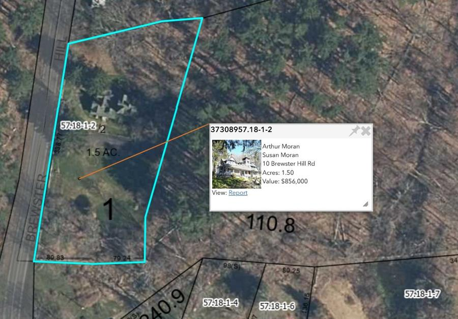
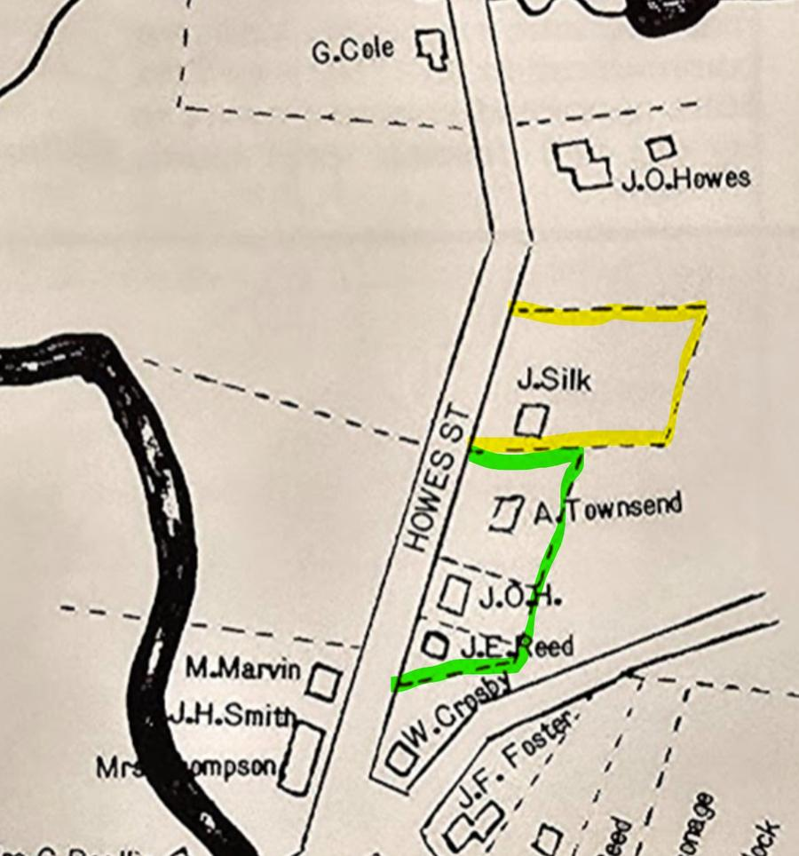
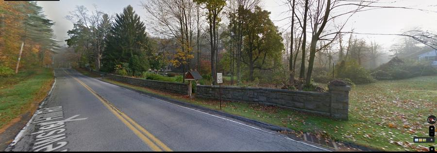
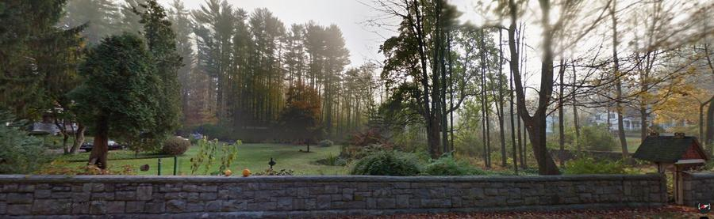
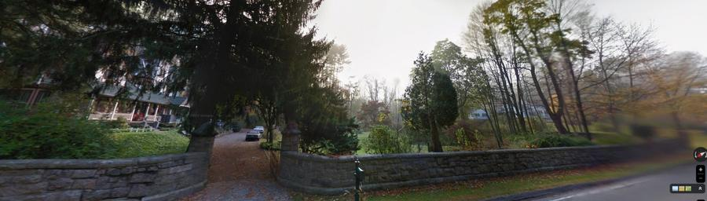
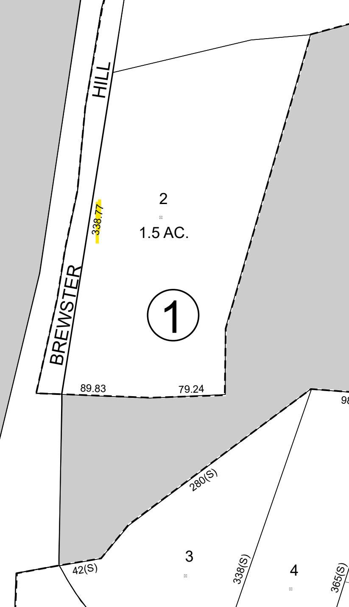
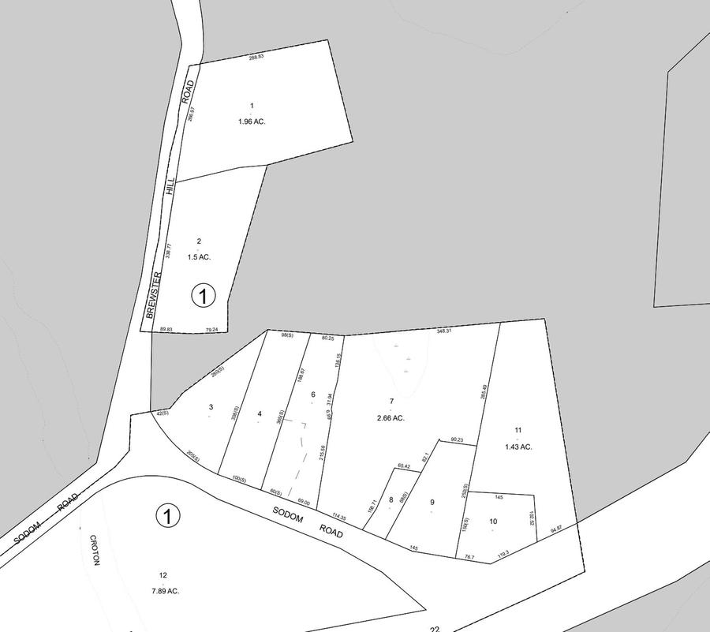
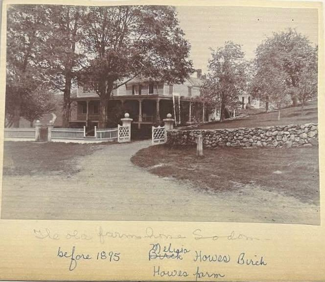
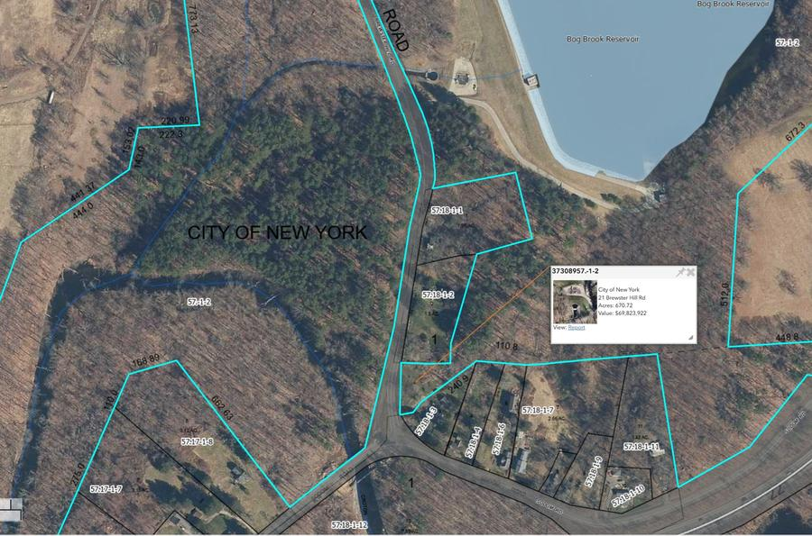

I. Property Overview

Stonehenge stands at 10 Brewster Hill Road in the hamlet of Southeast Centre, Town of Southeast, Putnam County, New York — Tax Map Section 57.18, Block 1, Lot 2. The property encompasses 1.5 acres fronting 338.77 feet along Brewster Hill Road, bordered on the north and east by lands of the City of New York and on the south by City watershed land that separates it from the neighboring lots. A dressed-stone boundary wall running the full length of the road frontage marks the estate's western edge as Seth B. Howes left it.
The house is a substantial Victorian mansion of eclectic character — Queen Anne, Tudoresque, and Romanesque elements combined — set on elevated ground in the northern portion of the lot, visible from the road through mature trees. The southern portion of the lot is flat open lawn, the former site of the Jacob O. Howes farmhouse. The name Stonehenge was chosen by Seth B. Howes after the English prehistoric monument, consistent with his naming of his other country seat, Morningthorpe.
Lot 2 is currently owned by Arthur and Susan Moran (acquired March 6, 1998, Liber 1423/84) who also hold the adjacent Lot 1 at 22 Brewster Hill Road (acquired September 1999, Liber 1485/188), reuniting the combined 3.46-acre Stonehenge estate for the first time since its division in 1946.
II. Southeast Centre in 1876 — A Town at Its Peak
To understand what was built at Stonehenge and what was ultimately lost to the watershed, it helps to see Southeast Centre as it appeared at the moment of Seth B. Howes's greatest investment there. The year 1876 — the national centennial — provides exactly that snapshot through the historical address delivered by H.H. Roberts to the Town of Southeast on July 14, 1876.
Roberts painted a portrait of a town at the height of its prosperity. Southeast had a population of over 3,000. It boasted six organized churches, a thriving wool and hat manufacturing industry, the Tilly Foster Iron Mine, and a Borden Condensed Milk Factory condensing up to 30,000 quarts of milk per day. "There is wealth, intellectual and religious culture here," Roberts wrote, "and in these and other respects it is not surpassed by any town in the County."
Roberts named the families who had built this prosperity: "The principal settlers of this town were the Cranes, Crosbys, Halls, Moodys, Paddocks, Haines, Howes, Carpenters, and others." Reading this list against the deed record for Stonehenge, nearly every family named as a founding settler also appears as a boundary owner in the documents assembling Lot 2. Roberts noted too that "The new Croton river dam and reservoir are being built, also, in the western part of the town." Seth B. Howes was at exactly this moment investing in and improving Stonehenge.
III. The Howes Brothers
The three Howes brothers who shaped Southeast Centre were grandsons of Treadwell Moody through their father Daniel Howes. Moody appears in the primary deed record as early as July 14, 1823 (Liber B/106).
Nathan Alva Howes, the eldest, served as Southeast Town Supervisor from 1840 to 1842 and later as State Senator from 1851. Jacob Orson Howes, the middle brother, was a carpenter and lumber merchant who built the first brick commercial structures on Brewster's Main Street and held the farmstead immediately south of what would become Stonehenge — his land appearing on the 1867 Beers atlas as "J.O.H." Jacob died on May 7, 1876; his will was proved before Surrogate Edward Might on May 30, 1876. Seth Benedict Howes, the youngest, entered the circus at age eleven alongside Nathan and rose to become one of the most prominent circus entrepreneurs of the nineteenth century.
IV. The Assembly of Lot 2 — Three Beers Map Parcels Become One
One of the most significant findings of this research is how three separate nineteenth-century landholdings shown on the 1867 Beers atlas came to be consolidated into the single 1.5-acre Lot 2. The map depicts five distinct labeled parcels along "Howes St" (now Brewster Hill Road): J. Silk, A. Townsend, J.O.H., J.E. Reed, and W. Crosby.

The Silk parcel became modern Lot 1. The three parcels — A. Townsend, J.O.H., and J.E. Reed — became modern Lot 2. The 1930 Sells survey confirmed 605.74 feet of combined road frontage (266.97 ft for Lot 1; 338.77 ft for Lot 2). Within Lot 2's 338.77 feet, the sub-parcels apportion as approximately 131 ft (Townsend core), 131 ft (J.O.H. house lot), and 76 ft (Reed strip). The Reed strip cross-checks perfectly: the deed gives 75 feet 6¾ inches — matching the map within rounding.
The Pre-Howes Chain (before 1870)
The parcel had a dwelling house upon it as early as 1826, when John B. Foster and wife Phebe conveyed "one half acre on the east side of the highway" with a dwelling house to Eleazer Sprague and Ebenezer Foster jointly (Liber C/305, $230). Ebenezer Foster conveyed to James Hine on April 24, 1833 (Liber H/361, $850). The Hine heirs conveyed to Albert Townsend by quitclaim on April 2, 1860 (Liber 35/549), bounded south by Jacob O. Howes — placing J.O.H. immediately to the south of the future Stonehenge site seven years before the Beers atlas was drawn.
Seth B. Howes Acquires and Assembles (1870–1884)
Albert Townsend and wife Jane Ann conveyed to Seth B. Howes of Chicago, Illinois, on March 21, 1870 (Liber 48/331, $2,275). Seth enlarged his holdings through targeted acquisitions: Esther A. Crosby conveyed a 2-rod eastern strip on May 23, 1874 (Liber 54/11, $500); the J.O.H. house lot was acquired from Orson H. Cole and the Cole women in October 1878 (Liber 58/476–477), five months after watershed surveyors appeared at Southeast Centre; Thomas F. Reed conveyed a 75 ft 6¾ in road frontage strip on July 26, 1884 (Liber 61/549, $1,800) — only 116 days after Reed acquired it from W.H. Crosby, a pure pass-through to clear title; and Melissa A. Birch conveyed a west-of-highway river strip in September 1884 (Liber 64/282, $450). By end of 1884, all three sub-parcels were unified in Seth's hands.
V. The Stone Wall — Dated to Summer 1877
The dressed-stone boundary wall running the full 338.77 feet of road frontage was begun in summer 1877. The Brewster Standard reported August 24, 1877 that Margaret Silk "proposed to take issue with S.B. Howes, because he pleased to build a high stone wall, thereby inconveniencing Margaret, who was in the habit of going that way to get water from a spring." Margaret failed. The wall was extended southward as each sub-parcel was added in 1878 and 1884.



![Looking at the Lot 1 / Lot 2 boundary from Brewster Hill Road. Three
distinct wall types visible simultaneously. Lower left: dry-laid field
stone along Lot 1 (Silk) frontage — rounded irregular stones, no
mortar, the pre-Howes neighborhood standard Margaret Silk never
replaced. Center: rougher cross-wall at the interior Lot 1 / Lot 2
boundary, almost certainly the \'high stone wall\' Seth built by 1877
that Silk objected to. Right: dressed-stone Stonehenge estate wall with
uniform rectangular blocks and formal gate pier — Seth\'s construction
built in stages 1877--1884. Stonehenge visible center-right through
trees.](../images/lot2/lot2_06.jpg)
A modern photograph at the Lot 1 / Lot 2 boundary shows three distinct wall types simultaneously: the dressed-stone Stonehenge estate wall with uniform rectangular blocks and formal gate piers; a rougher cross-wall at the interior boundary (the 1877 construction); and along Lot 1's frontage, a dry-laid field stone wall of rounded irregular stones — identical in character to the wall visible in the J.O.H. farmhouse photograph. The wall running the full 338.77 feet is itself evidence the consolidation was complete before it was built. Seth's 1897 will bequeathing "all the land enclosed by the fence surrounding the same" describes this wall exactly.
VI. Tax Map Evidence


The current tax map confirms the spatial argument. Lot 2's shape is a parallelogram with 338.77 feet of road frontage on the west, and eastern and southern boundaries running along City of New York land — established by watershed taking instruments rather than private deed surveys.
VII. The J.O.H. Farmhouse — "Before 1895"

A sepia photograph in the Putnam County Historian's collection carries the handwritten caption: "The old farm home Sodom — before 1895, Melissa [Black, struck through] Howes Birch, Howes farm." This image almost certainly depicts the Jacob O. Howes farmhouse on the southern portion of today's Lot 2.
"Melissa [Black, struck through] Howes Birch" resolves fully through the deed record. Melissa was Jacob Orson Howes's daughter. She married first a Mr. Birch — hence "Melissa A. Birch" in the 1884 deed (Liber 64/282) — and after his death married Elbert C. Howes. "Howes farm" is the telling element — not "Birch farm." "Before 1895" is not casual: by 1887 the Aqueduct Notice had been published; the Double Reservoir I survey map was filed May 14, 1896, making the taking irrevocable. They photographed the house because they knew it would not survive. Melissa subsequently moved to Brewster by 1897. The farmhouse is no longer standing — the flat open lawn visible today from Brewster Hill Road occupies the former J.O.H. house lot site.
VIII. The Watershed
Two separate legal proceedings affected the Howes properties. The Double Reservoir I proceeding (Chapter 490, Laws of 1883) claimed the upland properties. The estate of Jacob Orson Howes held Parcel 1¾ — released to the City by Vilessa Birch as sole surviving executrix on October 4, 1900 for $1,310 (Liber 86/136–138). The Brewster Sanitary proceeding (Chapter 189, Laws of 1893) claimed the west-of-highway parcels. Seth received an award of $3,215 for Parcel No. 6 (Liber 80/495–498).

The effect froze Stonehenge in place. The City's land now borders Stonehenge on the north, east, and south — the estate is an island of private land in a sea of New York City watershed property, exactly as Roberts' thriving neighborhood of founding families was reduced, one condemnation award at a time, to the landscape visible today.
IX. Seth and Amy — Stonehenge as Home (1884–1894)
Seth Benedict Howes was born August 15, 1815. He married Amy Mozley in London on January 25, 1867 — she was born there July 12, 1841. It was not until 1884 that the couple came to America permanently, making Stonehenge their first permanent American home. Amy's obituary (June 10, 1927) described Stonehenge as "a beautiful house of English pattern near the center of Southeast Centre." Seth was confirmed in residence at Stonehenge in February 1887. By July 13, 1894, Seth had moved to Morningthorpe on Turk Hill Road (Liber 74/120–123, $12,500 for land only). Seth funded St. Andrew's Episcopal Church in Brewster through a posthumous bequest; the church was dedicated June 13, 1901, less than a month after his death on May 16, 1901.
X. The Will and the Modern Chain (1901–Present)
Seth's will, dated July 5, 1897 (Liber 87/272), bequeathed "the residence owned by me in Southeast Centre known as Stonehenge together with all the land enclosed by the fence surrounding the same, including Stonehenge Lodge and Barn" to his daughter Ruhamah M. Heartfield. Ruhamah purchased Lot 1 from Margaret Silk for $1,300 within five weeks of Seth's death (Liber 87/226, June 22, 1901).
The combined estate passed to Seth W. Heartfield (Liber 149/332), Ivan T. Johnson (1937), D. Earl and Julia Brady Santore (1938), and Joseph Hollos (1945). Hollos divided the parcel in 1946. Lot 2 passed to Angele Christaud (executor's deed, 1948), Vincent and Elizabeth Spellman (1972), Robert and Patricia Wood (1989), and Arthur and Susan Moran (March 6, 1998, Liber 1423/84). The Morans acquired Lot 1 in September 1999 (Liber 1485/188), reuniting the full Stonehenge estate for the first time since 1946.
Chateau Stonehenge — Angele Christaud (1948–1972)
In May 1948, Angele Christaud of Queens — who had received Lot 2 by executor's deed after the Hollos estate divided the combined parcel — opened a French restaurant she called Chateau Stonehenge. The Brewster Standard of November 11, 1948 described the opening night dinner. The guests included "Mr. and Mrs. Reuben Howes of the Howes Castle on Turk Hill road" — Seth's son, still living at Morningthorpe nearly half a century after Seth's death — and "Mrs. Eliza B. Reed, whose father, Colonel Crosby, lived in Southeast Center." The "Colonel Crosby" was Seth O. Crosby, co-executor of Jacob O. Howes's estate, who had married Jacob's daughter Martha. His granddaughter was at the opening of a restaurant in the house his father-in-law's brother had built. "The old stone work," the article noted, "bears the mark of time. It never shifted; neither did the beams." The Christaud restaurant operated for twenty-four years, until 1972.
The School Site That Never Was
One episode from 1901 deserves special attention. The original Sodom district school site had been taken by the watershed condemnation. The community needed a replacement. The Silk plot — Lot 1, immediately adjacent to Stonehenge — was the leading candidate. A community meeting in June 1901 was actively discussing the site when Ruhamah Heartfield moved. The June 28, 1901 Brewster Standard reported the outcome: "Seth B. Howes' heirs made that site prohibitive by paying $1,000 for it." The deed governs at $1,300 (Liber 87/226, June 22, 1901). Ruhamah's purchase was completed six days after that community meeting — five weeks after her father's death. The school was never built on Lot 1's northern boundary. The two parcels, united for the first time in their recorded history, passed together through the twentieth century until Joseph Hollos divided them in 1946.